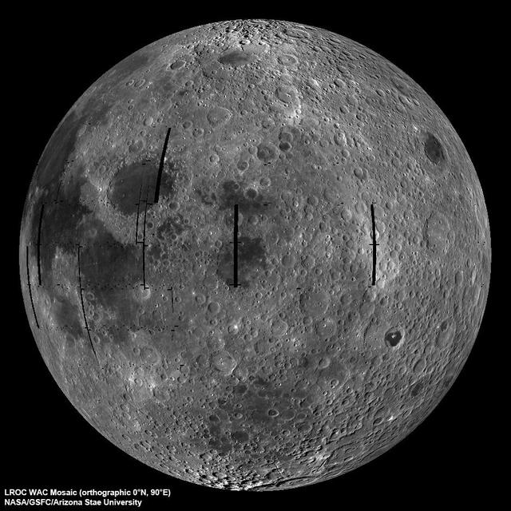

Daha anlaşılır hale getireyim:
Eskiden insanlar, evrendeki tek uydunun bizim Ay'ımız olduğunu sanıyordu. 1610 yılında Galileo Galilei,
Jüpiter’in etrafında dönen dört uyduyu keşfetti. Ancak o zamana kadar başka uydular bilinmediği için bizim
uydumuza özel bir isim verilmedi. Latince’de Ay’a “Luna” denirdi ve Ay ile ilgili şeyler için “aysal”
kelimesi kullanılırdı.

Ay'ın Boyut ve mesafesi
Yaklaşık 1.080 mil (1.740 kilometre) yarıçapıyla Ay, Dünya'nın genişliğinin üçte birinden daha azdır.
Dünya bir nikel büyüklüğünde olsaydı, Ay yaklaşık olarak bir kahve çekirdeği kadar büyük olurdu.
Ay ortalama 238.855 mil (384.400 kilometre) uzaklıktadır. Bu, Dünya ile Ay arasına 30 Dünya büyüklüğünde
gezegenin sığabileceği anlamına gelir.
Ay, Dünya'dan yavaş yavaş uzaklaşıyor ve her yıl yaklaşık 2,5 cm daha uzaklaşıyor.
Ay'ın yaşam potansiyeli
Ay'ı inceleyen birçok görev, Ay'ın kendi canlılarına sahip olduğuna dair hiçbir kanıt bulamadı. Ancak Ay,
gelecekte insanların kolonileştirileceği yer olabilir. Ay'ın su buzu barındırdığı ve en yüksek
yoğunlukların
kutuplardaki karanlık kraterlerde meydana geldiği keşfi, Ay'ı gelecekteki insan kolonicileri için biraz
daha
misafirperver hale getiriyor.
Ay'ın yörünge ve dönüşü
Ay, Dünya'nın etrafında dönerken kendi ekseni etrafında da döner ve bu iki hareket aynı hızda
gerçekleşir. Bu duruma **senkron dönüş** denir. Bunun sonucu olarak, Ay'ın hep aynı yüzü Dünya'ya
dönüktür, diğer yüzünü ise Dünya'dan göremeyiz. Dünya'dan göremediğimiz bu yarım küreye bazen "karanlık
taraf" denir, ancak bu doğru bir ifade değildir. Çünkü Ay’ın o tarafı da, tıpkı görünen tarafı gibi,
farklı zamanlarda Güneş ışığı alır.
Ay’ın Dünya etrafında dönmesi sırasında, Güneş ışığının Ay’a vurduğu açı sürekli değişir. Bu değişiklik,
bizim Ay’ı farklı evrelerde görmemize neden olur. Örneğin:
- **Dolunay** sırasında, Ay'ın bize bakan yüzü tamamen Güneş tarafından aydınlatılmıştır.
- **Yeni Ay** sırasında ise tam tersi bir durum gerçekleşir. Ay’ın bize bakan tarafı tamamen karanlıkta
kalır, çünkü Güneş ışığı Ay’ın diğer yüzünü aydınlatır.
Ay, Dünya etrafındaki bir tam turunu yaklaşık **27 Dünya gününde** tamamlar. İlginç olan ise, bu süre
boyunca kendi etrafındaki dönüşü de tamamlanır. Bu yüzden, Dünya’dan bakıldığında Ay’ın hep aynı yüzünü
görürüz.
Ancak burada küçük bir ayrıntı daha var: Dünya da bu süreçte hareket halindedir; hem Güneş etrafında
döner hem de kendi ekseni etrafında döner. Bu durum, bizim perspektifimizden Ay’ın tam bir döngüsünü
yaklaşık **29 günde** tamamladığı izlenimini yaratır. Bu süreye **sinodik ay** denir ve Ay’ın evrelerini
gözlemlediğimiz zaman dilimidir.
Ay'ın oluşumu
Ay'ın, birkaç milyar yıl önce Mars büyüklüğünde bir cismin Dünya'ya çarpması sonucu oluştuğu tahmin
ediliyor.
Hem Dünya'dan hem de çarpan cisimden çıkan enkaz, 239.000 mil (384.000 kilometre) uzaklıktaki doğal
uydumuzu
oluşturmak için birikti. Yeni oluşan Ay erimiş haldeydi, ancak yaklaşık 100 milyon yıl içinde küresel
"magma
okyanusunun" çoğu kristalleşti ve daha az yoğun kayalar yukarı doğru yüzdü ve sonunda ay kabuğunu
oluşturdu.
Ay'ın yüzeyi
Ay, çok ince ve seyrek bir atmosfere sahip olduğu için, uzaydan gelen asteroitler, meteoroidler ve
kuyrukluyıldızlar Ay’ın yüzeyine kolayca çarpar. Bu çarpışmalar, Ay’ın yüzeyinde sayısız krater
bırakmıştır. Tycho Krateri, Ay’daki en büyük kraterlerden biridir ve çapı 85 kilometreden (52 mil) daha
geniştir.
Milyarlarca yıl boyunca bu çarpışmalar, Ay’ın yüzeyini büyük kayalardan ince toza kadar farklı
boyutlarda malzemelere ayırmıştır. Bugün Ay’ın yüzeyi, ay regolit adı verilen gri, tozlu bir moloz
tabakasıyla kaplıdır. Bu tabakanın altında, megaregolit olarak bilinen ve kırılmış kaya parçalarından
oluşan bir katman yer alır.
Ay’ın yüzeyinde iki ana bölge bulunur. Aydınlık bölgeler, yaylalar olarak bilinir ve Ay’ın yüksek
alanlarını temsil eder. Daha koyu renkli bölgeler ise Latince’de “denizler” anlamına gelen Maria olarak
adlandırılır. Bu koyu bölgeler, milyarlarca yıl önce dev çarpma havzalarının lavla dolmasıyla
oluşmuştur. Yaylalar ve Maria bölgeleri, Ay’ın erken dönemlerinde devasa bir magma okyanusundan
kristalleşen kabuğun nasıl oluştuğunu anlamamızı sağlar. Ay yüzeyindeki kraterler ise Ay ve Güneş
Sistemi’nin diğer cisimlerinin geçmişteki çarpışma tarihine ışık tutar.
Ay yüzeyinde insan izleri de bulunmaktadır. Astronotların bıraktığı ekipman parçaları, Amerikan
bayrakları ve hatta bir kamera bile Ay’da kalmıştır. Yerçekiminin Dünya’nınkinin altıda biri olduğu
Ay’da, astronotların yürüyüşleri zıplıyormuş gibi görünür.
Ay’da sıcaklıklar, Güneş ışığı alıp almamasına bağlı olarak büyük değişiklikler gösterir. Güneş ışığı
altındaki sıcaklık yaklaşık 127°C’ye (260°F) kadar çıkarken, karanlıkta sıcaklık -173°C’ye (-280°F)
kadar düşer. Bu aşırı sıcaklık farkı, Ay’ın ince atmosferinin ısıyı tutamamasından kaynaklanır.
Ay, geçmişteki çarpışma olayları ve insanlığın bıraktığı izlerle Güneş Sistemi’nin tarihi hakkında
önemli bilgiler sunmaktadır.
Ayda su bulunması
Ay'ın ilk keşfi sırasında ve Apollo ve Luna görevlerinden dönen tüm örneklerin analizinde, Ay yüzeyinin
kuru olduğunu düşünüyorduk.
Suyun ilk kesin keşfi, 2008 yılında , ay yüzeyine yayılmış ve kutuplarda yoğunlaşmış hidroksil
moleküllerini tespit eden Hindistan misyonu Chandrayaan-1 tarafından yapıldı . Lunar Prospector , LCROSS
ve Lunar Reconnaissance Orbiter gibi misyonlar , yalnızca Ay'ın yüzeyinin küresel bir hidrasyona sahip
olduğunu değil, aynı zamanda ay kutuplarının kalıcı olarak gölgelenen bölgelerinde aslında yüksek
konsantrasyonlarda buzlu su bulunduğunu gösterdi.Bilim insanları ayrıca Ay'ın mikrometeoroidler
tarafından bombalanması durumunda Ay yüzeyinin suyunu serbest bıraktığını buldular. Yüzey, yalnızca
büyük mikrometeoroidler tarafından delinebilen birkaç santimetrelik kuru toprak tabakasıyla
korunmaktadır. Mikrometeoroidler Ay'ın yüzeyine çarptığında, kraterdeki malzemenin çoğu buharlaşır. Şok
dalgası, toprağın tanelerini kaplayan suyu serbest bırakmak için yeterli enerji taşır. Bu suyun çoğu
uzaya salınır.
Ekim 2020'de NASA'nın Kızılötesi Astronomi için Stratosferik Gözlemevi (SOFIA), Ay'ın güneş ışığı alan
yüzeyinde ilk kez su olduğunu doğruladı. Bu keşif, suyun Ay yüzeyinde dağılmış olabileceğini ve soğuk,
gölgeli yerlerle sınırlı olmadığını gösteriyor. SOFIA, Ay'ın güney yarım küresinde bulunan ve Dünya'dan
görülebilen en büyük kraterlerden biri olan Clavius Krateri'nde su molekülleri (H2O) tespit etti.
Ay'ın atmosferi
Ay'ın ekzosfer adı verilen çok ince ve zayıf bir atmosferi vardır. Güneş'in radyasyonundan veya
meteoroidlerin etkilerinden herhangi bir koruma sağlamaz.